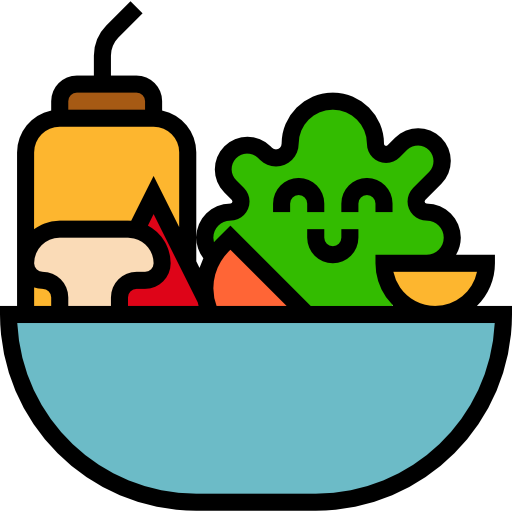
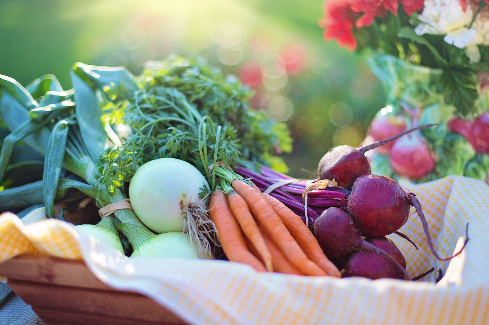

- ODS
- Vídeo
- Metas
No ano de 2015 os líderes e representantes globais se reuniram na cidade de Nova York entre os dias 25 e 27 de Setembro para definir os objetivos sustentáveis globais. Nesse momento a ONU completava seu 70º aniversário. Foram definidos 17 objetivos e 169 metas para serem atingidos até o ano de 2030. Esses objetivos foram baseados nos Objetivos de Desenvolvimento do Milênio, buscando concluir o que estes não conseguiram atingir.
 A alimentação e boa nutrição se faz necessária desde a gestação da criança, onde o bebê é alimentado atráves da mãe. A mãe tendo uma boa alimentação poderá passar todos os nutrientes e vitaminas para que seu filho possa nascer saudável. Infelizmente, atualmente a boa alimentação não se inicia desde a gestação da criança, em pleno século XXI a fome é presente em boa parte do mundo. Precisamos lutar para que essa realidade seja outra, além de iniciar a boa alimentação desde a infância e se manter ao longo da vida, também é preciso prestarmos atenção de onde esse alimento virá. A agricultura sustentável tem um papel muito importante para isso, com alimentos sem agrotóxicos e de boa qualidade, podemos auxiliar pequenos produtores que vivem nos nossos interiores. Há um grande caminho para se percorrer, mas se todos nos conscientizarmos, podemos melhorar a vida de muitas pessoas, auxiliando elas na alimentação e dessa forma, as tornando saudáveis para poderem fazerem suas demais atividades e serem pessoas com uma boa saúde.
Abaixo há algumas das metas que foram definidas para serem cumpridas, assim atingindo os 17 objetivos propostos.
Até 2030, acabar com a fome e garantir o acesso de todas as pessoas, em particular os pobres e pessoas em situações vulneráveis, incluindo crianças, a alimentos seguros, nutritivos e suficientes durante todo o ano

Até 2030, acabar com todas as formas de desnutrição, incluindo atingir, até 2025, as metas acordadas internacionalmente sobre nanismo e caquexia em crianças menores de cinco anos de idade, e atender às necessidades nutricionais dos adolescentes, mulheres grávidas e lactantes e pessoas idosas
Até 2030, dobrar a produtividade agrícola e a renda dos pequenos produtores de alimentos, particularmente das mulheres, povos indígenas, agricultores familiares, pastores e pescadores, inclusive por meio de acesso seguro e igual à terra, outros recursos produtivos e insumos, conhecimento, serviços financeiros, mercados e oportunidades de agregação de valor e de emprego não agrícola
Até 2030, garantir sistemas sustentáveis de produção de alimentos e implementar práticas agrícolas resilientes, que aumentem a produtividade e a produção, que ajudem a manter os ecossistemas, que fortaleçam a capacidade de adaptação às mudanças climáticas, às condições meteorológicas extremas, secas, inundações e outros desastres, e que melhorem progressivamente a qualidade da terra e do solo